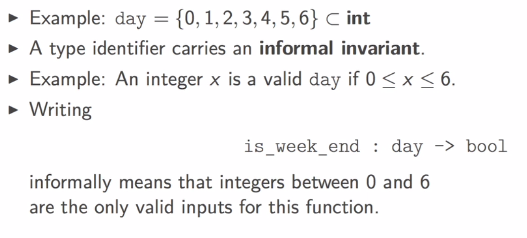
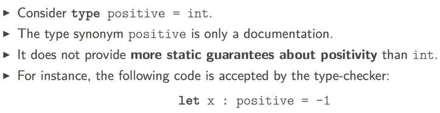
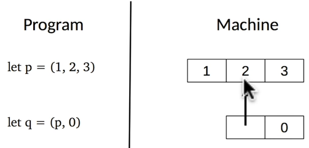
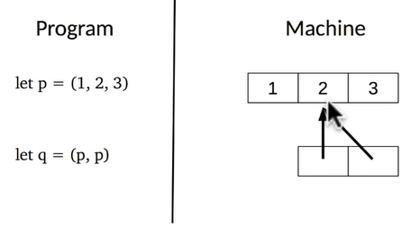
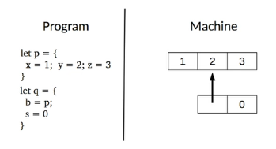
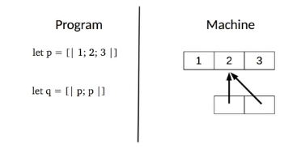

this week: structure code with types: tuples, records, arrays.
1. USER-DEFINED TYPES
primary use of types: document your code

- use
type type_identifier = some_typeto define a new type (type_identifieris synonym/abbrevation ofsome_type) type_identifiermust start with lowercase letter- already known types:
int, bool, string, char... - use
:to add type annotation to identifierslet x : some_type = some_expr - annotation param/return type of a function:
let f(x: some_type): return_type = some_exprorlet f x : return_type = some_expr
example: colors
# type color = int;;
type color = int
# let red: color = 0;;
val red : color = 0
# let white: color = 1;;
val white : color = 1
# let blue: color = 2;;
val blue : color = 2
example: positive integers
# type positive = int;;
type positive = int
# let abs(x:int) = (if x<0 then -x else x: positive);;
val abs : int -> positive = <fun>
# let abs' (x:int): positive = if x<0 then -x else x;;
val abs' : int -> positive = <fun>
pitfalls
- in the REPL, careful with unintended hiding of type identifiers:
# type t = int;;
type t = int
# let x: t = 0;;
val x : t = 0
# type t = bool;;
type t = bool
# let f (x: t) = not x;;
val f : t -> bool = <fun>
# let z = f x;;
Error: This expression has type t/1027 = int
but an expression was expected of type t/1029 = bool
- limitations of type synonyms

⇒ but ocaml has ways to define more precise types to avoid such error statically
2. TUPLES: positioned components
Some objects are naturally made of several components, example: 2d point.
# let origin = (0,0);;
val origin : int * int = (0, 0)
# let positive_range = (max_int, 0);;
val positive_range : int * int = (4611686018427387903, 0)
# let negative_range = (min_int, 0);;
val negative_range : int * int = (-4611686018427387904, 0)
name tuples with type: use * to construct tuple types.
# type point2D = int * int ;;
type point2D = int * int
# let origin : point2D = (0,0);;
val origin : point2D = (0, 0)
pattern matching: observing components of tuple
- pattern: describe how values are observed by the program.
- appear in let-bindings or in func arguments.
- simplest form of pattern: identifiers
example: let x = 6*3 in x can be read as "I observe the value of 63 by naming it as x*"
- ignore some component using wildcard
_, example:let _ = 6*3 in 1;;
example for tuple: let (x, _) = (5, 2) in x;; can read as: "I observe the first component of tuple (5,2) by naming it as x, and I ignore the 2nd component"
# let a = (3,4);;
val a : int * int = (3, 4)
# let (x,_) = a;;
val x : int = 3
# let x_coord (x, _) = x;;
val x_coord : 'a * 'b -> 'a = <fun>
# let y_coord (_, y) = y;;
val y_coord : 'a * 'b -> 'b = <fun>
tuples in the machine
tuple is a block of memory, program holds pointer to the block,

pointers can be shared:

structrual equality VS physical equaliity
in ocaml there are 2 types of equalities:
=implies structrual eq — i.e. they have the same content.==implies physical eq — i.e. they are stored in the same memory location.
# let x = (1,2)
let y = (1,2)
let z = x;;
val x : int * int = (1, 2)
val y : int * int = (1, 2)
val z : int * int = (1, 2)
# x = y;;
- : bool = true
# x == y;;
- : bool = false
# x == z;;
- : bool = true
pitfalls
- mismatching number of components : can be caught by compiler
- semantic errors:
example: # let x_coord (x, y) = y;; can't be caught by compiler → using records.
3. RECORDS: naming components
name each components of a tuple → record.
example:
# type point2D = {x:int ; y:int};;
type point2D = { x : int; y : int; }
# let origin = {x = 0; y = 0};;
val origin : point2D = {x = 0; y = 0}
# let from_tuple (x,y) = {x ; y};;
val from_tuple : int * int -> point2D = <fun>
# let a = from_tuple (4,2) ;;
val a : point2D = {x = 4; y = 2}
# let b = from_tuple (10, 5);;
val b : point2D = {x = 10; y = 5}
# type box = {left_upper: point2D; right_lower: point2D;};;
type box = { left_upper : point2D; right_lower : point2D; }
# let abox = {left_upper=a; right_lower=b};;
val abox : box = {left_upper = {x = 4; y = 2}; right_lower = {x = 10; y = 5}}
# let get_min_xcoord {left_upper = {x}} = x;; (*pattern matching here for the func*)
val get_min_xcoord : box -> int = <fun>
decalre a record type:
type som_type_identifier = {field_name: some_type; ...; field_name: some_type}
construct a record:
{field_name = some_expr; ...; field_name = som_expr}
observe a field:
some_expr.field_name
observe several fields: use record patterns:
{field_name = some_pattern; ...; field_name = some_pattern}
(don't have to write all fields here)
in the machine: like a tuple, a block of memory

pitfalls: shadowing a field name
if 2 records share some identical field names:
# type a = {x:int; b:int};;
type a = { x : int; b : int; }
# type b = {y:int; c:int;};;
type b = { y : int; c : int; }
# {x=0; b=2};;
- : a = {x = 0; b = 2}
# type t = {x:bool};;
type t = { x : bool; }
# {x=true};;
- : t = {x = true}
# type u = {x:int};;
type u = { x : int; }
# {x=true};;
Error: This expression has type bool but an expression was expected of type int
advice: NOT share field names between records!
4. ARRAYS
tuple/record: sizes are statically bounded.
array: dynamically change sequence size,
but all array elements must have same type.
# let p = [|1;2;3;|];;
val p : int array = [|1; 2; 3|]
# let square x = x * x;;
val square : int -> int = <fun>
# let squares n = Array.init n square;;
val squares : int -> int array = <fun>
# let s1 = squares 5;;
val s1 : int array = [|0; 1; 4; 9; 16|]
Std module Array: provides functions over arrays
some_array = [|some_expr; ...; some_expr|]Array.make sz val: takes an int (size of array) and a value to initialize each component of the array (like Array.fill).Array.init sz f: initial size of arrayszand a functionfto initilize each component of array, f takes the index of the component and returns a value.Array.length arr: returns array size.- array indexing:
arr.(some_expr:int), index: 0 to sz-1 - array patterns: observe several components of array
[|some_expr; ...; some_expr|](not very useful)
# let swap a = [|a.(1); a.(0)|];;
val swap : 'a array -> 'a array = <fun>
# let b = swap [|0;1|];;
val b : int array = [|1; 0|]
# let swap [|x; y|] = [|y; x|];;
Characters 9-28:
Warning 8: this pattern-matching is not exhaustive.
Here is an example of a value that is not matched: [| |]
val swap : 'a array -> 'a array = <fun>
# let t = swap [|2;1|];;
val t : int array = [|1; 2|]
# let t = swap [|2;1;0|];;
Exception: Match_failure ("//toplevel//", 1, 9).
in the machine: a memory block, like a record

5. CASE STUDY: A SMALL TYPED DATABASE
a toy db for contacts,
3 queries: insert, delete, search.
These functions have type: database -> query_contact -> status * database * contact
define the phone number/contact/database types:
type phone_number = int * int * int * int;;
type contact = {
name : string;
phone_number : phone_number
};;
let nobody = { name = ""; phone_number = (0, 0, 0, 0) };;
type database = {
number_of_contacts : int;
contacts : contact array;
};;
implement make (to create a database with parameter=max capacity):
let make max_number_of_contacts =
{
number_of_contacts = 0;
contacts = Array.make max_number_of_contacts nobody
};;
(* Queries are represented by a code and a contact.
- If the code is 0 then the contact must be inserted.
- If the code is 1 then the contact must be deleted.
- If the code is 2 then we are looking for a contact
with the same name in the database. *)
type query = {
code : int;
contact : contact;
}
implement search:
let search db contact =
let rec aux idx =
if idx >= db.number_of_contacts then
(false, db, nobody)
else if db.contacts.(idx).name = contact.name then
(true, db, db.contacts.(idx))
else
aux (idx + 1)
in
aux 0;;
implement insert:
let insert db contact =
if db.number_of_contacts >= Array.length db.contacts then
(false, db, nobody)
else
let (status, db, _) = search db contact in
if status then (false, db, contact) else
let cells i =
if i = db.number_of_contacts then contact else db.contacts.(i)
in
let db' = {
number_of_contacts = db.number_of_contacts + 1;
contacts = Array.init (Array.length db.contacts) cells
}
in
(true, db', contact);;
implement delete:
let delete db contact =
let (status, db, contact) = search db contact in
if not status then (false, db, contact)
else
let cells i =
let last = db.contacts.(db.number_of_contacts-1) in
if db.contacts.(i).name = contact.name then last
else if i==(db.number_of_contacts-1) then nobody
else db.contacts.(i) in
let db' = {
number_of_contacts = db.number_of_contacts - 1;
contacts = Array.init (Array.length db.contacts) cells
}
in (true, db', contact);;
implement an engine function to process all kinds of queries:
(* Engine parses and interprets the query. *)
let engine db { code ; contact } =
if code = 0 then insert db contact
else if code = 1 then delete db contact
else if code = 2 then search db contact
else (false, db, nobody);;
Remarks:
This is purely functional, a new db is created each time a query is processed.
Part 3 of series «Introduction to Functional Programming in OCaml»：
- [OCaml MOOC] week0: intro and overview
- [OCaml MOOC] week1: BASIC TYPES, DEFINITIONS AND FUNCTIONS
- [OCaml MOOC] week2: BASIC DATA STRUCTURES
- [OCaml MOOC] week3: MORE ADVANCED DATA STRUCTURES
- [OCaml MOOC] week4: HIGHER ORDER FUNCTIONS
- [OCaml MOOC] week5: EXCEPTIONS, INPUT OUTPUT AND IMPERATIVE CONSTRUCTS
- [OCaml MOOC] week6: MODULES AND DATA ABSTRACTION
Disqus 留言